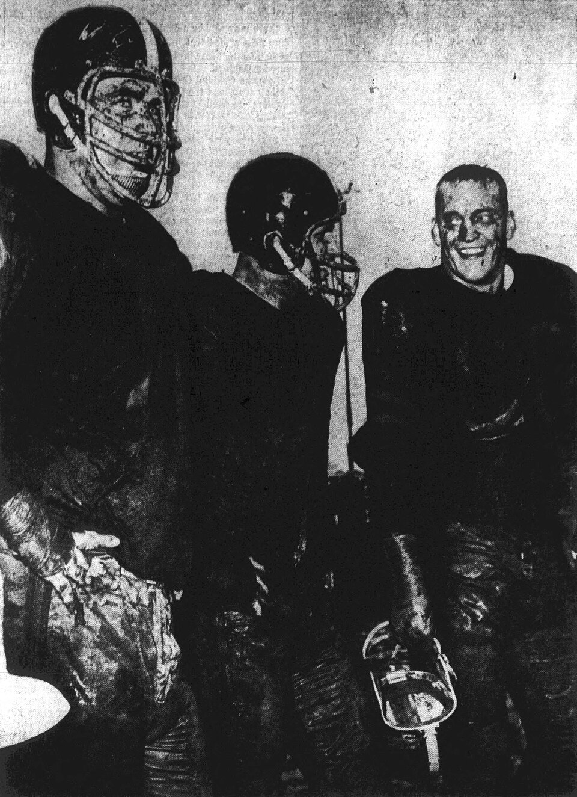
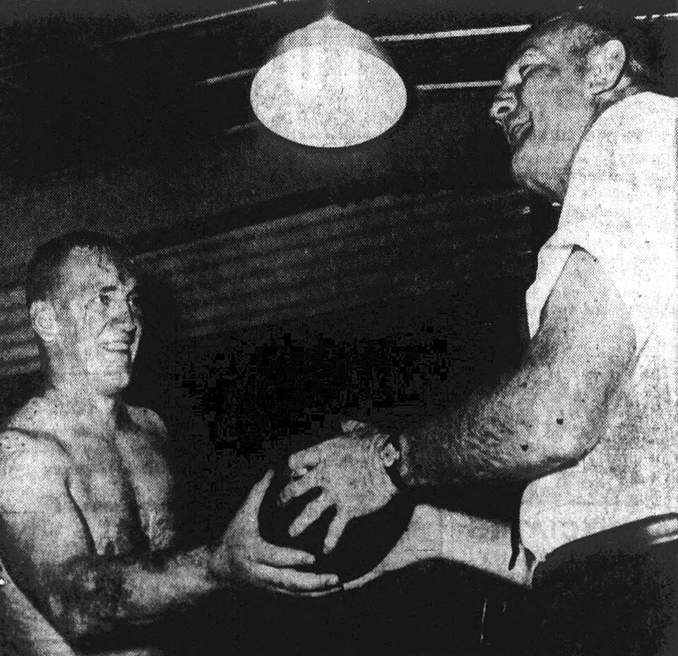

Jim Otto
The Original Raider. Undrafted, undersized, wearing a number that was a pun on his own name, and he never missed a game in 15 years.
The Jim Otto Story
Before there were Raiders the way we think of them, the silver and black and the Coliseum and all of it, there was Jim Otto snapping the ball. He was there for the very first season in 1960, he was the only starting center the franchise had for 15 years, and when they wrote the history of the team, he got the nickname that says it all: The Original Raider.
He was born January 5, 1938, in Wausau, Wisconsin, and his family had so little that some winters they couldn't afford new shoes to keep his feet dry. His hero was Elroy Crazylegs Hirsch, who'd played for the same Wausau High coach, Win Brockmeyer. Otto played center and linebacker for the Lumberjacks, and one season he broke his ankle, taped it up before every game, and played on it anyway. That was the whole career in one sentence, really.
He had 48 college offers and picked the University of Miami, where he played center and linebacker from 1957 to 1959. He was the starting center as a junior at just 193 pounds. No NFL team wanted a 205 pound center, so in 1960 he signed as an undrafted free agent with a brand new team in the brand new American Football League, the Oakland Raiders.
He weighed 217 pounds at that first camp and was up to 240 by the end of the year, and he kept building himself until he played at 255. He wore 50 as a rookie, then equipment manager Frank Hinek suggested 00, for recognition, a play on his name. AFL commissioner Joe Foss went along with it. Double zero became the most famous number in Oakland.
Then he just never came off the field. Otto started every one of the Raiders' 140 games in the AFL's 10 year history, one of only three players to play in all of his team's AFL games, and the AFL never had another all league center the entire time it existed. He was first team All AFL nine times, and first team All Pro again in 1970 after the merger, giving him 10 in all. He played in all nine AFL All Star Games and the first three AFC NFC Pro Bowls.
Those early Raiders were terrible, and he was there for all of it. In 1962 they won one game all year, a December win at Frank Youell Field that snapped a 13 game skid. By 1967, with Al Davis running things and Gene Upshaw lining up next to him at left guard, Oakland was the best team in the AFL. They beat Houston 40 to 7 for the AFL title on December 31, 1967, and played Green Bay in Super Bowl II.
From 1967 through 1974 the Raiders won seven division titles in eight years. Otto played on lines with Upshaw, Art Shell and Bob Brown, all Hall of Famers. The Raiders lost AFL or AFC title games five times in that stretch, to the Jets, Chiefs, Colts, Dolphins and Steelers, and every one of those teams went on to win the Super Bowl. He was on the field for the Immaculate Reception in 1972 and caught the only pass of his pro career in that game, and he swore to his dying day the play should have been ruled incomplete.
The price was his body. For the last three years of his career he had his knee drained and injected three times a week, and he played on a braced knee and painkillers. After his fifth or sixth knee surgery he tried to come back for 1975, but the bone graft failed. His last game in a Raiders uniform was a preseason game against the 49ers, and he retired before the season started, the last member of the 1960 team to go. He spent time teaching his replacement, Dave Dalby, the position.
He went into the Pro Football Hall of Fame in 1980, his first year of eligibility. He was named to the AFL All Time Team, The Sporting News ranked him 78th on its list of the 100 greatest players in 1999, and in 2019 he was one of only four centers named to the NFL 100th Anniversary All Time Team.
What came after was brutal. By his count it was nearly 74 operations, 28 on his knees alone, and multiple joint replacements, three life threatening infections, and in 2007 his right leg was amputated. He said he had no regrets. He worked for the Raiders, built a small fortune around Oakland with Burger King franchises, liquor stores, a walnut orchard and real estate,.
Jim Otto died on May 19, 2024, in Auburn, California, at 86. Mark Davis lit the Al Davis Memorial Torch for him, and the team's statement called him what everybody already did: The Original Raider.
What He Meant to Us
Every Raiders fan around here has heard the phrase The Original Raider, and Otto is the reason it exists. He was there in 1960 when nobody cared, when they played at Frank Youell Field and won one game in 1962. He was still there in 1974 when they were the best team in football. That's the whole arc of the franchise in Oakland, and one guy started every game of it.
I think about the 00 a lot. An undrafted 205 pound center talks his way into wearing double zero, and then plays so well for so long that nobody ever laughs at it. The AFL never named another all league center. Not once.
The hard part is what it cost him. Nearly 74 operations, the knee drained three times a week just to get through Sundays, and eventually his right leg. And he said he wouldn't change a thing. You can call that crazy. Around here we just call it being a Raider.
When he died in May 2024, the team's statement called him The Original Raider, and nobody in Oakland needed it explained.
In Pictures


Why He Was Clutch
For a center, clutch means one thing: be there. Otto was there for 210 straight regular season starts and every playoff game the Raiders played in his career, through knee surgeries and injections and a body that was falling apart. He never missed a game.
And he wasn't just present, he was the best at his position for a decade. Ten first team All League selections, the first player in pro football history to reach ten, a mark only Jerry Rice has matched since. The AFL never named anybody else its all league center.
Look at what those Raiders did with him snapping the ball. They led the AFL in scoring three straight years from 1967 through 1969, won seven division titles in eight years, and made six conference championship games plus Super Bowl II. The offense ran through the middle of that line, and the middle of that line was double zero.
Clutch Moments
- 1960 season
The undrafted kid nobody wanted
No NFL team showed interest in a 205 pound center out of Miami, so Otto signed with the brand new Oakland Raiders of the AFL. He started every game as a rookie and was named first team All AFL. It was the beginning of a 210 game starting streak that would outlast the entire American Football League.
- December 31, 1967
AFL champions
Seven years after the Raiders were the league's doormats, Otto anchored a line that ran over the Houston Oilers in the AFL Championship Game in Oakland. The Raiders piled up 364 yards, 263 of them on the ground, allowed only 38 rushing yards, and won 40 to 7. It sent Oakland to Super Bowl II against Green Bay, the franchise's first trip to the big game.
- December 23, 1972
His only catch, on the day of the Immaculate Reception
In the divisional playoff at Pittsburgh, Otto made the only reception of his pro career. Then he watched from close range as the Steelers' Terry Bradshaw pass bounced off the collision between Jack Tatum and Frenchy Fuqua into Franco Harris' hands. During the 15 minute delay while officials sorted it out, he planned his escape route from the Pittsburgh crowd. He never accepted the call.
- December 21, 1974
Revenge on Miami
A year after the Dolphins beat Oakland in the AFC Championship Game, the two teams met in the divisional round at the Coliseum. Otto, in his 15th and final season, was in the middle of the line when Ken Stabler hit Clarence Davis in the Sea of Hands with seconds left, and the Raiders won 28 to 26.
- 1974 season
Start number 210
Playing on a knee he had drained three times a week, Otto started all 14 games again in 1974 as Oakland led the NFL in scoring with 355 points. It ended in the AFC Championship Game against Pittsburgh, a 24 to 13 loss, and it turned out to be the last of his 210 consecutive regular season starts.
- 1980
Canton on the first try
Otto was elected to the Pro Football Hall of Fame in 1980, his first year of eligibility. In 2019 the league named him one of the four centers on its 100th Anniversary All Time Team.
The Highlights
What They Said About Otto
“The personification of consistency, Jim's influence on the American Football League and professional football as a whole cannot be overstated,”
“Every day I walked on to the field, I was the best center. That’s the way I wanted to be. I continued to play at that level with those expectations.”
“I've often looked at being a football player as being a gladiator,”
“That’s what I wanted to do as a little boy here in Wausau. I wanted to be a football player like Elroy ‘crazy legs’ Hirsch, and that’s what I went out to be”
Career Stats
| Year | Team | Lg | G | GS | Honors |
|---|---|---|---|---|---|
| 1960 | OAK | AFL | 14 | 14 | AP 1st team |
| 1961 | OAK | AFL | 14 | 14 | All Star, AP 1st team |
| 1962 | OAK | AFL | 14 | 14 | All Star, AP 1st team |
| 1963 | OAK | AFL | 14 | 14 | All Star, AP 1st team |
| 1964 | OAK | AFL | 14 | 14 | All Star, AP 1st team |
| 1965 | OAK | AFL | 14 | 14 | All Star, AP 1st team |
| 1966 | OAK | AFL | 14 | 14 | All Star, AP 2nd team |
| 1967 | OAK | AFL | 14 | 14 | All Star, AP 1st team |
| 1968 | OAK | AFL | 14 | 14 | All Star, AP 1st team |
| 1969 | OAK | AFL | 14 | 14 | All Star, AP 1st team |
| 1970 | OAK | NFL | 14 | 14 | Pro Bowl, AP 1st team |
| 1971 | OAK | NFL | 14 | 14 | Pro Bowl |
| 1972 | OAK | NFL | 14 | 14 | Pro Bowl, AP 2nd team |
| 1973 | OAK | NFL | 14 | 14 | |
| 1974 | OAK | NFL | 14 | 14 | |
| Career | 210 | 210 | 12 All Star Games or Pro Bowls |
Centers don't keep box score stats, so this is the record that matters: every game, every start, 1960 to 1974. All Star means the AFL All Star Game (1961 to 1969). AP honors are AP All AFL before 1970 and AP All Pro after. Other selectors also named him first team All AFL in 1966, and the Hall of Fame credits him with 10 straight All AFL seasons. Scroll the table sideways on a phone.
Postseason games
| Year | Team | Lg | G | GS |
|---|---|---|---|---|
| 1967 | OAK | AFL | 2 | 2 |
| 1968 | OAK | AFL | 2 | 2 |
| 1969 | OAK | AFL | 2 | 2 |
| 1970 | OAK | NFL | 2 | 2 |
| 1972 | OAK | NFL | 1 | 1 |
| 1973 | OAK | NFL | 2 | 2 |
| 1974 | OAK | NFL | 2 | 2 |
| Career | 13 | 13 |
Jim Otto: Fast Facts
What years was Jim Otto with the Oakland Raiders?
Jim Otto was with the Oakland Raiders from 1960 to 1974 as a center.
What number did Jim Otto wear?
Jim Otto wore numbers 00, 50.
What are Jim Otto's signature numbers?
210 consecutive regular season starts, every game of his career; 15 seasons, 1960 to 1974, all in Oakland; 12 AFL All Star Games and Pro Bowls; 10 first team All Pro or All AFL selections.
What were Jim Otto's biggest honors?
AFL champion (1967); 10x first team All AFL or All Pro (1960 to 1965, 1967 to 1970); 9x AFL All Star (1961 to 1969), 3x Pro Bowl (1970 to 1972); AFL All Time Team; NFL 100th Anniversary All Time Team.
What are some of Otto's biggest moments?
The undrafted kid nobody wanted (1960 season); AFL champions (December 31, 1967); His only catch, on the day of the Immaculate Reception (December 23, 1972). Every one is in the Clutch Moments section above.